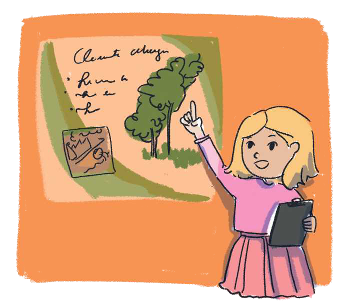

TEMATIKA 6: MEDIET
2.DITA DHE DIELLI PREZANTOJNË PROJEKTIN

- Dita, ke përfunduar projektin? - e pyeti mësuesja.
- Po, mësuese, madje kam punuar bashkë me Diellin dhe prindërit tanë.
- Si e organizuat punën tuaj?
- Në fillim ndamë punët, njëri mblidhte materiale pune (tekste, punën në klasë, fotografitë e aktiviteteve në klasë etj.), ndërsa tjetri i klasifikonte sipas periudhës kohore. Pastaj filluam punën në kompjuter. Fillimisht patëm vështirësi, por me ndihmën e të rriturve arritëm ta finalizojmë punën tonë në “Power Point”, që do ta prezantoj bashkë me Diellin para jush!